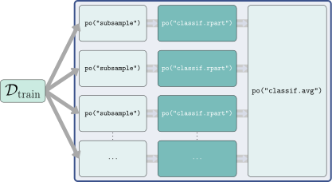

8 Non-sequential Pipelines and Tuning
Martin Binder
Ludwig-Maximilians-Universität München, and Munich Center for Machine Learning (MCML)
Florian Pfisterer
Ludwig-Maximilians-Universität München
Marc Becker
Ludwig-Maximilians-Universität München
Marvin N. Wright
Leibniz Institute for Prevention Research and Epidemiology – BIPS, and University of Bremen, and University of Copenhagen
In sec-pipelines we looked at simple sequential pipelines that can be built using the Graph class and a few PipeOp objects. In this chapter we will take this further and look at non-sequential pipelines that can perform more complex operations. We will then look at tuning pipelines by combining methods in mlr3tuning and mlr3pipelines and will consider some concrete examples using multi-fidelity tuning (sec-hyperband) and feature selection (sec-feature-selection).
We saw the power of the %>>%-operator in sec-pipelines to assemble graphs from combinations of multiple PipeOps and Learners. Given a single PipeOp or Learner, the %>>%-operator will arrange these objects into a linear Graph with each PipeOp acting in sequence. However, by using the gunion() function, we can instead combine multiple PipeOps, Graphs, or a mixture of both, into a parallel Graph (Figure fig-non-sequential).
In the following example, we create a Graph that centers its inputs and then copies the scaled data to two parallel streams: one replaces the data with columns that indicate whether data is missing, the other imputes missing data using the median (we will return to this in sec-preprocessing-missing). The outputs of both streams are then combined into a single dataset using po("featureunion").

PipeOps in parallel whose outputs are then combined and returned to the user.When applied to the first three rows of the tsk("pima") task we can see how this imputes missing data and adds a column indicating where values were missing.
tsk_pima_head = tsk("pima")$filter(1:3)
tsk_pima_head$data(cols = c("diabetes", "insulin", "triceps")) diabetes insulin triceps
1: pos NA 35
2: neg NA 29
3: pos NA NAresult = graph$train(tsk_pima_head)[[1]]
result$data(cols = c("diabetes", "insulin", "missing_insulin", "triceps",
"missing_triceps")) diabetes insulin missing_insulin triceps missing_triceps
1: pos 0 missing 3 present
2: neg 0 missing -3 present
3: pos 0 missing 0 missing8.1 Selectors and Parallel Pipelines
It is common in Graphs for an operation to be applied to a subset of features. In mlr3pipelines this can either (Figure fig-pipelines-select-affect) be achieved by passing the column subset to the affect_columns hyperparameter of a PipeOp (assuming it has that hyperparameter), which controls which columns should be affected by the PipeOp. Alternatively, one can use the PipeOpSelect operator to create operations in parallel on specified feature subsets, and uniting the result using PipeOpFeatureUnion.
po(op2, affected_columns: X"). Bottom plot shows the parallel pipeline that starts with an arrow splitting and then pointing to both po("select", ¬X) and po("select", X). These respectively point to po(op1) and po(op2), which then both point to the same po("featureunion")." data-ref-parent="fig-pipelines-select-affect">
affect_columns hyperparameter can be used to restrict operations to a subset of features. When used, pipelines may still be run in sequence.po(op2, affected_columns: X"). Bottom plot shows the parallel pipeline that starts with an arrow splitting and then pointing to both po("select", ¬X) and po("select", X). These respectively point to po(op1) and po(op2), which then both point to the same po("featureunion")." data-ref-parent="fig-pipelines-select-affect">
po("select") and then combining outputs with po("featureunion").PipeOps (po(op1) and po(op2)) that operate on complementary features (X and ¬X) of an input task.Both methods make use of Selector-functions. These are helper-functions that indicate to a PipeOp which features it should apply to. Selectors may match column names by regular expressions selector_grep(), or by column type selector_type(). Selectors can also be used to join variables (selector_union()), return their set difference (selector_setdiff()), or select the complement of features from another Selector (selector_invert()).
For example, in sec-pipelines-pipeops we applied PCA to the bill length and depth of penguins from tsk("penguins_simple") by first selecting these columns using the Task method $select() and then applying the PipeOp. We can now do this more simply with selector_grep, and could go on to use selector_invert to apply some other PipeOp to other features, below we use po("scale") and make use of the affect_columns method:
sel_bill = selector_grep("^bill")
sel_not_bill = selector_invert(sel_bill)
graph = po("scale", affect_columns = sel_not_bill) %>>%
po("pca", affect_columns = sel_bill)
result = graph$train(tsk("penguins_simple"))
result[[1]]$data()[1:3, 1:5] species PC1 PC2 body_mass flipper_length
1: Adelie -5.015 1.0717 -0.5676 -1.4246
2: Adelie -4.495 -0.1853 -0.5055 -1.0679
3: Adelie -3.755 0.4868 -1.1886 -0.4257The biggest advantage of this method is that it creates a very simple, sequential Graph. However, one disadvantage of the affect_columns method is that it is relatively easy to have unexpected results if the ordering of PipeOps is mixed up. For example, if we had reversed the order of po("pca") and po("scale") above then we would have first created columns "PC1" and "PC2" and then scaled these as they would match the pattern in sel_not_bill. Creating parallel paths with po("select") can help mitigate such errors by selecting features given by the Selector and creating an independent data processing streams with the given feature subset. Below we pass the parallel pipelines to gunion() as a list to ensure they receive the same input, and then combine the outputs with po("featureunion").

Graph where features are split into two paths, one with PCA and one with scaling, then combined and returned.The po("select") method also has the significant advantage that it allows the same set of features to be used on multiple operations and also allows some features to remain untransformed (affect_columns effectively filters out any columns not included in a Selector). PipeOpNOP performs no operation on its inputs and is thus useful when you only want to perform a transformation on a subset of features and leave the others untouched:

Graph where features are split into two paths, features that start with ‘bill’ are scaled and the rest are untransformed.graph$train(tsk("penguins_simple"))[[1]]$data()[1:3, 1:5] species bill_depth bill_length body_mass flipper_length
1: Adelie 0.7796 -0.8947 3750 181
2: Adelie 0.1194 -0.8216 3800 186
3: Adelie 0.4241 -0.6753 3250 1958.2 Common Patterns and ppl()
Now you have the tools to create sequential and non-sequential pipelines, you can now create an infinite number of transformations on Task, Learner, and Prediction objects. In sec-pipelines-bagging and sec-pipelines-stack we will work through two complex examples to demonstrate how you can make complex and powerful graphs using the methods and classes we have already looked at. However, there are many common problems in ML that can be well solved by the same pipelines, and so to make your life easier we have implemented and saved these pipelines in the mlr_graphs dictionary; pipelines in the dictionary can be accessed with the ppl() sugar function.
At the time of writing, this dictionary includes seven Graphs (required arguments included):
-
ppl("bagging", graph): Inmlr3pipelines, bagging, described in detail in sec-pipelines-bagging, is the process of running agraphmultiple times on different data samples and then averaging the results. Theiterationsargument controls the number of bagging iterations,fraccontrols the sampling fraction, the averaging method can also be adjusted through theaveragerparameter. -
ppl("branch", graphs): UsesPipeOpBranchto create different path branches from the givengraphswhere only one branch is evaluated. This is returned to in more detail in sec-pipelines-branch. -
ppl("greplicate", graph, n): Create aGraphthat replicatesgraph(which can also be a singlePipeOp)ntimes. The pipeline avoids ID clashes by adding a suffix to eachPipeOp, we will see this pipeline in use in sec-pipelines-bagging. -
ppl("ovr", graph): One-versus-rest classification for converting multiclass classification tasks into several binary classification tasks with one task for each class in the original task. These tasks are then evaluated by the givengraph, which should be a learner (or a pipeline containing a learner that emits a prediction). The predictions made on the binary tasks are combined into the multiclass prediction needed for the original task. -
ppl("robustify"): Perform common preprocessing steps to make anyTaskcompatible with a givenLearner. Optional arguments are theTaskandLearnerin question, as well as individual switches that decide which kind of preprocessing should be done. The “robustify” Graph element queries the metadata provided by the respective objects and performs only the necessary preprocessing. This pipeline is returned to in more detail in sec-prepro-robustify. -
ppl("stacking", base_learners, super_learner): Stacking, returned to in detail in sec-pipelines-stack, is the process of using predictions from one or more models (base_learners) as features in a subsequent model (super_learner) -
ppl("targettrafo", graph): Create aGraphthat transforms the prediction target of a task and ensures that any transformations applied during training (using the function passed to thetargetmutate.trafohyperparameter) are inverted in the resulting predictions (using the function passed to thetargetmutate.inverterhyperparameter); an example is given in sec-prepro-scale.
8.3 Practical Pipelines by Example
In this section we will now put pipelines into practice by demonstrating how to turn weak learners into powerful machine learning models using bagging and stacking.
8.3.1 Bagging with “greplicate” and “subsample”
The basic idea of bagging (from bootstrapp aggregating), introduced by Breiman (1996), is to aggregate create multiple predictors into a single, more powerful predictor (Figure fig-pipelines-bagging). Predictions are usually aggregated by the arithmetic mean for regression tasks or majority vote for classification. The underlying intuition behind bagging is that averaging a set of weak, but diverse (i.e., only weakly correlated) predictors can reduce the variance of the overall prediction. Each learner is trained on a different random sample of the original data.
Although we have already seen that a pre-constructed bagging pipeline is available with ppl("bagging"), in this section we will build our own pipeline from scratch to showcase how to construct a complex Graph, which will look something like Figure fig-pipelines-bagging.

PipeOp.To begin, we use po("subsample") to sample a fraction of the data (here 70%), which is then passed to a classification tree.
Next we use pipeline_greplicate to copy the graph gr_single_pred 10 times (n = 10) and finally po("classifavg") to take the majority vote of all predictions, note that we pass innum = 10 to "classifavg" to tell the PipeOp to expect 10 inputs.

Graph with one input being sampled many times for 10 different learners.Now let us see how well our bagging pipeline compares to the single decision tree and to a random forest, we will test this on the tsk("sonar") task.
lrn_bag = as_learner(bagging)
lrn_bag$id = "bagging"
lrn_rpart = lrn("classif.rpart")
grid = benchmark_grid(tsk("sonar"),
c(lrn_bag, lrn_rpart, lrn("classif.ranger")), rsmp("cv", folds = 3))
bmr = benchmark(grid)
bmr$aggregate()[, .(learner_id, classif.ce)] learner_id classif.ce
1: bagging 0.2498
2: classif.rpart 0.2739
3: classif.ranger 0.1973The bagged learner performs noticeably better than the decision tree but worse than the random forest. The steps above are saved as an accessible graph in pipeline_bagging(), to construct the above we would simply construct the ppl("bagging") pipeline specifying the learner to ‘bag’, number of iterations, fraction of data to sample, and the PipeOp to average the predictions, note we set collect_multiplicity = TRUE which collects the predictions across paths, which technically use the Multiplicity method that we will not discuss here but refer the reader to the documentation.
The main difference between our pipeline and a random forest is that the latter also performs feature subsampling, where only a random subset of available features is considered at each split point. While we cannot implement this directly with mlr3pipelines, we can use a custom Selector method to approximate this method. For efficiency we will now use ppl("bagging") to recreate the steps above, we also create a custom Selector by passing a function that takes as input the task and returns a sample of the features, we sample the square root of the number of features to mimic the implementation in ranger::ranger.
# custom selector
selector_subsample = function(task) {
sample(task$feature_names, sqrt(length(task$feature_names)))
}
# bagging pipeline with our selector
bagging_quasi_rf = ppl("bagging",
graph = po("select", selector = selector_subsample) %>>%
lrn("classif.rpart", minsplit = 1),
iterations = 100,
averager = po("classifavg", collect_multiplicity = TRUE)
)
# bootstrap resampling
bagging_quasi_rf$param_set$values$subsample.replace = TRUE
# convert to learner
l_quasi_rf = as_learner(bagging_quasi_rf)
l_quasi_rf$id = "quasi.rf"
# benchmark
design = benchmark_grid(tsks("sonar"),
c(l_quasi_rf, lrn("classif.ranger", num.trees = 100)),
rsmp("cv", folds = 5)
)
bmr = benchmark(design)
bmr$aggregate()[, .(learner_id, classif.ce)] learner_id classif.ce
1: quasi.rf 0.1826
2: classif.ranger 0.1590In only a few lines of code, we took a weak learner and turned it into a powerful model that we can see is comparable to the implementation in ranger::ranger. In the next section we will look at a second example, which makes use of cross-validation within pipelines.
8.3.2 Stacking with “learner_cv”
Stacking (Wolpert 1992) is another technique that can significantly improve model performance. The basic idea behind stacking is to use predictions from one model as features for a subsequent model to try to improve performance (Figure fig-pipelines-stacking). As with bagging, we will demonstrate how to create a stacking pipeline manually, although a pre-constructed pipeline is available with ppl("stacking").

PipeOpFeatureUnion.Stacking depends on the predictions of models that are trained on the same data. Therefore, analogously to nested resampling when tuning (sec-nested-resampling), we must limit overfitting by stacking features from cross-validated data, this is possible in pipelines with PipeOpLearnerCV. Each of the models is then trained on a subset of folds and makes predictions on the out-of-fold data, obtaining predictions for all data points in our input data without ‘leaking’ information into the prediction stage.
We first create various learners that produce the predictions that will be used as features, known as the “level 0” learners. Like bagging, stacking also often uses ‘weak’ learners that might not perform well on their own, in this example we use a classification tree, k-nearest-neighbors (KNN), and a regularized GLM. Each learner is wrapped in po("learner_cv") which trains and predicts with the given learner, returning the model predictions in a new Task as its output.
lrn_rpart = lrn("classif.rpart", predict_type = "prob")
po_rpart_cv = po("learner_cv", learner = lrn_rpart,
resampling.folds = 2, id = "rpart_cv"
)
lrn_knn = lrn("classif.kknn", predict_type = "prob")
po_knn_cv = po("learner_cv",
learner = lrn_knn,
resampling.folds = 2, id = "knn_cv"
)
lrn_glmnet = lrn("classif.glmnet", predict_type = "prob")
po_glmnet_cv = po("learner_cv",
learner = lrn_glmnet,
resampling.folds = 2, id = "glmnet_cv"
)These learners are combined using gunion(), and po("featureunion") is used to merge their predictions. This is demonstrated in the output of $train():
level_0 = gunion(list(po_rpart_cv, po_knn_cv, po_glmnet_cv))
combined = level_0 %>>% po("featureunion")
combined$train(tsk("sonar"))[[1]]$head() Class rpart_cv.prob.M rpart_cv.prob.R knn_cv.prob.M knn_cv.prob.R
1: R 0.57895 0.4211 0.3857 0.6143
2: R 0.88636 0.1136 0.3170 0.6830
3: R 0.04348 0.9565 0.4396 0.5604
4: R 0.03030 0.9697 0.4762 0.5238
5: R 0.04348 0.9565 0.4753 0.5247
6: R 0.23077 0.7692 0.4020 0.5980
2 variables not shown: [glmnet_cv.prob.M, glmnet_cv.prob.R]
Retaining features
The resulting task contains the predicted probabilities for both classes made from each of the level 0 learners. However as the probabilities always add up to 1 we only need the predictions for one of the classes (as this is a binary classification task), so we can use po("select") to only keep predictions for one class (we choose "M" in this example).
stack = combined %>>%
po("select", selector = selector_grep("\\.M"))Finally we can combine our pipeline with the final model that will take these predictions as its input.

As we used logistic regression as the final model, we can inspect the weights of the level 0 learners by looking at the final trained model:
glrn_stack = as_learner(stack)
glrn_stack$train(tsk("sonar"))
glrn_stack$base_learner()$model
Call: stats::glm(formula = task$formula(), family = "binomial", data = data,
model = FALSE)
Coefficients:
(Intercept) rpart_cv.prob.M knn_cv.prob.M glmnet_cv.prob.M
-3.120 -0.134 4.040 1.804
Degrees of Freedom: 207 Total (i.e. Null); 204 Residual
Null Deviance: 287
Residual Deviance: 176 AIC: 184The model weights suggest that knn influences the predictions the most with the largest coefficient. To confirm this we can benchmark the individual models alongside the stacking pipeline.
glrn_stack$id = "stacking"
design = benchmark_grid(
tsks("sonar"),
list(lrn_rpart, lrn_knn, lrn_glmnet, glrn_stack),
rsmp("repeated_cv")
)
bmr = benchmark(design)
bmr$aggregate()[, .(learner_id, classif.ce)] learner_id classif.ce
1: classif.rpart 0.2876
2: classif.kknn 0.1505
3: classif.glmnet 0.2559
4: stacking 0.1438This experiment confirms that of the individual models, the KNN learner performs the best, however our stacking pipeline outperforms them all. Now that we have seen the inner workings of this pipeline, next time you might want to more efficiently create it using pipeline_stacking(), to copy the example above you would run:
Having covered the building blocks of mlr3pipelines and seen these in practice, we will now turn to more advanced functionality, combining pipelines with tuning.
8.4 Tuning Graphs
By making use of GraphLearner, it is possible to tune a Graph of arbitrary complexity using mlr3tuning. However, tuning pipelines is not straightforward as not only do you have to choose which Learner hyperparameters to tune, but you also have to consider which PipeOps to include in the pipeline and which of their hyperparameters to tune. For example we saw how to create different complexities of bagging pipelines in sec-pipelines-bagging, if we wanted to tune this we would have to decide: 1) which Learner to use as our weak learner; 2) the hyperparameters to tune for the weak learner and their ranges; 3) if we should tune the replications of ppl("greplicate"); 4) if we should tune or select the averaging method; 5) should we add a custom feature selection and tune this; 6) what sampling method should we use and should the fraction be tuned? This gets even more complicated with stacking if we have many weak learners we might want to tune. And yet more complicated if we also want to decide if further preprocessing steps improve model performance. To consider these questions, in sec-pipelines-combined we will look at how to tune Learner and PipeOp hyperparameters and then in sec-pipelines-branch and sec-pipelines-proxy we will takes this a step further to see how we can also tune the choice of which operations to include in the pipeline, known as “Combined Algorithm Selection and Hyperparameter optimization”(Thornton et al. 2013).
8.4.1 Tuning Graph Hyperparameters
Let us consider a simple, sequential pipeline using po("pca") followed by lrn("classif.kknn"):
Now if we wanted to tune the k parameter of the KNN model we could use an AutoTuner and pass this to the graph as a Learner:
tuned_knn = auto_tuner(tnr("random_search"),
lrn("classif.kknn", k = to_tune(1, 32)), rsmp("holdout"),
term_evals = 10)
pipe = as_learner(po("pca") %>>% tuned_knn)
resample(tsk("sonar"), pipe, rsmp("holdout"))$aggregate()classif.ce
0.3478 However, if we also wanted to tune the rank. parameter of our PCA PipeOp then this would be inefficient as the optimal hyperparameters may depend on each other. Instead we would should tune the graph directly by tuning PipeOps in the exact same way as Learners:
knn = lrn("classif.kknn", k = to_tune(1, 32))
pca = po("pca", rank. = to_tune(2, 20))
pipe = as_learner(pca %>>% knn)
pipe$param_set$values$pca.rank.
Tuning over:
range [2, 20]
$classif.kknn.k
Tuning over:
range [1, 32]We can see how the pipelines $param_set includes the tune tokens for all elements of the pipeline so when we tune the pipeline these are combined into different hyperparameter configurations. We can compare the tuned and untuned pipeline in a benchmark experiment by using an AutoTuner:
tuned_pipe = auto_tuner(tnr("random_search"), pipe, rsmp("holdout"),
term_evals = 10)
untuned_pipe = po("pca") %>>% lrn("classif.kknn")
design = benchmark_grid(tsk("sonar"), c(tuned_pipe, untuned_pipe),
rsmp("cv", folds = 5))
benchmark(design)$aggregate()[, .(learner_id, classif.ce)] learner_id classif.ce
1: pca.classif.kknn.tuned 0.1973
2: pca.classif.kknn 0.2403Using the same syntax as we have learnt in sec-optimization, you can now tune hyperparameters for fixed pipelines. Tuning pipelines will usually take longer than tuning individual learners as training steps are often more complex and the search space may be much larger, therefore parallelization is often required in practice (sec-parallelization) and/or more efficient tuning methods for searching large search spaces such as Bayesian Optimization (sec-bayesian-optimization.)
8.4.2 Tuning Alternative Paths with po(“branch”)
In the previous section we tuned the KKNN and decision tree in the stacking pipeline, as well as tuning the rank of the PCA. However, we tuned the PCA without asking if it was beneficial at all, in this section we will answer that question by making use of PipeOpBranch and PipeOpUnbranch, which make it possible to specify multiple alternative paths. po("branch") creates multiple paths such that data can only flow through one of these as determined by the selection hyperparameter (Figure fig-pipelines-alternatives). This concept makes it possible to tune alternative preprocessing methods or alternative learner models.

po("branch") and po("unbranch") operators where three separate branches are created and data only flows through the PCA, which is specified with the argument to selection.To demonstrate alternative paths we will make use of the MNIST (LeCun et al. 1998) data, which is useful for demonstrating preprocessing. The data is loaded from OpenML, which is described in sec-openml, we subset the data to 5% of its original size for efficiency.
po("branch") is initialized either with the number of branches, or with a character-vector indicating the names of the branches, the latter makes the selection hyperparameter (discussed below) more readable. Below we create three branches: do nothing (po("nop")), apply PCA (po("pca")), remove constant features (po("removeconstants")) then apply the Yeo-Johnson transform (po("yeojohnson")). It is important to use po("unbranch") (with same arguments as "branch") to ensure that the outputs are merged into one result objects.
The resulting Graph then looks as follows:
graph$plot(horizontal = TRUE)
po("branch") and combined with po("unbranch").The output of this Graph depends on the setting of the branch.selection hyperparameter:
graph$param_set$values$branch_PO.selection = "pca" # use the "PCA" path
head(graph$train(tsk_mnist)[[1]]$feature_names)[1] "PC1" "PC2" "PC3" "PC4" "PC5" "PC6"graph$param_set$values$branch_PO.selection = "nop" # use the "No-Op" path
head(graph$train(tsk_mnist)[[1]]$feature_names)[1] "pixel2" "pixel9" "pixel14" "pixel16" "pixel17" "pixel41"ppl("branch") simplifies the above by allowing you to just pass the different paths to the graphs argument:
Tuning the selection hyperparameter can help determine which of the possible options works best in combination with a given learner:
glrn_rpart = as_learner(graph %>>% lrn("classif.rpart"))
glrn_rpart$param_set$values$branch_PO.selection = to_tune(paths)
instance = tune(tnr("random_search"), tsk_mnist, glrn_rpart,
rsmp("holdout"), msr("classif.ce"), term_evals = 10)
instance$result branch_PO.selection learner_param_vals x_domain classif.ce
1: yeojohnson <list[6]> <list[1]> 0.4474Here we see that in combination with the decision tree, pca was the best performing PipeOp. Branching can even be used to tune which of several learners is most appropriate for a given dataset. We now extend this example to add the choice between a decision tree and KKNN:

po("branch") and combined with po("unbranch").Now we can see why we added those IDs earlier to avoid name clashes.
Finally, we will additionally tune the k hyperparameter of the KNN learner, as it may depend on the type of preprocessing performed. However, this hyperparameter is only active when the "classif.kknn" path is chosen and so we set a dependency (sec-optimization-depends):
graph_learner = as_learner(graph_learner)
graph_learner$param_set$set_values(
branch_PO.selection = to_tune(paths),
branch.selection = to_tune(c("classif.rpart", "classif.kknn")),
classif.kknn.k = to_tune(p_int(1, 32, depends = branch.selection == "classif.kknn"))
)
instance = tune(
tuner = tnr("random_search"),
task = tsk_mnist,
learner = graph_learner,
resampling = rsmp("cv", folds = 3),
measure = msr("classif.ce"),
term_evals = 10
)
instance$result[, .(branch_PO.selection, classif.kknn.k, branch.selection, classif.ce)] branch_PO.selection classif.kknn.k branch.selection classif.ce
1: yeojohnson 30 classif.kknn 0.302By tuning the pipeline hyperparameters and the decision of which operations and learners to include, we were able to achieve good model performance using the KNN learner with the Yeo-Johnson transform.
8.4.3 Tuning with po(“proxy”)
This section covers advanced ML or technical details.
po("proxy") is a meta-operator that performs the operation that is stored in its content hyperparameter, which could be another PipeOp or Graph, it can therefore be used to tune over and select different PipeOps or Graphs that could be passed to this hyperparameter (Figure fig-pipelines-alternatives).

po("proxy") operator with a PipeOp as its argument.To recreate the example above with po("proxy"), the first step is to create placeholder PipeOpProxy operators to stand in for the operations (i.e., different paths) that should be tuned.
The tuning space for the content hyperparameters should be a discrete set of possibilities to be evaluated, passed as a p_fct (sec-tune-ps). For the "preproc" proxy operator this would simply be the different PipeOps that we want to consider:
For the "learner" proxy, this is more complicated as the selection of the learner depends on more than one search space component: The choice of the learner itself (lrn("classif.rpart") or lrn("classif.kknn")) and the tuned k hyperparameter of the KNN learner. To enable this we pass a transformation to .extra_trafo (sec-tune-trafo). Note that inside this transformation we clone learner.content otherwise we would end up modifying the original Learner object inside the search space by reference (sec-r6).
# define content for the learner proxy operator
learner.content = p_fct(list(
classif.rpart = lrn("classif.rpart"),
classif.kknn = lrn("classif.kknn")
))
# define transformation to set the content values
trafo = function(x, param_set) {
if (!is.null(x$classif.kknn.k)) {
x$learner.content = x$learner.content$clone(deep = TRUE)
x$learner.content$param_set$values$k = x$classif.kknn.k
x$classif.kknn.k = NULL
}
x
}We can now put this all together, add the KNN tuning, and run the experiment.
search_space = ps(
preproc.content = preproc.content,
learner.content = learner.content,
# tune KKNN parameter as normal
classif.kknn.k = p_int(1, 32, depends = learner.content == "classif.kknn"),
.extra_trafo = trafo
)
instance = tune(
tuner = tnr("random_search"),
task = tsk_mnist,
learner = graph_learner,
resampling = rsmp("cv", folds = 3),
measure = msr("classif.ce"),
search_space = search_space,
term_evals = 10
)
as.data.table(instance$result)[,
.(preproc.content,
classif.kknn.k = x_domain[[1]]$learner.content$param_set$values$k,
learner.content, classif.ce)
] preproc.content classif.kknn.k learner.content classif.ce
1: nop 28 classif.kknn 0.309Once again, the best configuration is a KNN learner with the Yeo-Johnson transform. In practice po("proxy") offers complete flexibility and may be more useful for more complicated use-cases, whereas ppl("branch") is more efficient in more straightforward scenarios.
8.4.4 Putting Everything Together with Hyperband
This section covers advanced ML or technical details.
In sec-hyperband-tuner we learnt about the Hyperband tuner and how it can make use of fidelity parameters to efficiently tune learners. Now that you have learnt about pipelines and how to tune them, in this short section we will briefly return to Hyperband to showcase how we can put together everything we have learnt in this chapter to allow Hyperband to be used with any Learner.
We previously saw how some learners have hyperparameters that can ‘natively’ be fidelity parameters, such as the number of trees in a random forest. However, using pipelines, we can now create a fidelity parameter for any model using po("subsample"). The frac parameter of po("subsample") controls the amount of data fed into the subsequent Learner. In general, feeding less data to a Learner results in quicker model training but poorer quality predictions compared to when more training data is supplied; thus making the fraction of data to subsample the perfect candidate for a fidelity parameter.
In the code below we will demonstrate how to use the frac hyperparameter of po("subsample") as a fidelity parameter for any Learner. This works as subsampling can be used to reduce the data size and thus speed up the
As we saw earlier, po("subsample") samples the data and passes the subset to the next PipeOp in a Graph, the frac parameter controls how much data to sample. In this example we will optimize the SVM hyperparameters, cost and gamma, on the sonar dataset:
learner = lrn("classif.svm", id = "svm", type = "C-classification",
kernel = "radial", cost = to_tune(1e-5, 1e5, logscale = TRUE),
gamma = to_tune(1e-5, 1e5, logscale = TRUE))We then construct po("subsample") and specify that we want to use the frac parameter between \([3^{-3}, 1]\) as our fidelity parameter and set the "budget" tag to pass this information to Hyperband. We add this to our SVM and create a GraphLearner.
As good practice we encapsulate our learner and add a fallback to prevent fatal errors (sec-tuning-errors).
Now we can tune our SVM by tuning our GraphLearner as normal, below we set eta = 3 for Hyperband.
instance = tune(
tuner = tnr("hyperband", eta = 3),
task = tsk("sonar"),
learner = graph_learner,
resampling = rsmp("cv", folds = 3),
measures = msr("classif.ce")
)
unlist(instance$result$x_domain[[1]][2:3]) svm.cost svm.gamma
2.586e+03 1.442e-02 8.5 Conclusion
In this chapter, we built on what we learnt in sec-pipelines to develop complex non-sequential Graphs. We saw how to build our own graphs, as well as how to make use of ppl() to load Graphs that are available in mlr3pipelines. We then looked at different ways to tune pipelines, including joint tuning of hyperparameters and tuning the selection of PipeOps in a Graph. In sec-preprocessing we will put all of this into practice as we look at pipelines for data preprocessing.
Table tbl-api-pipelines-nonseq provides an overview of the most important methods and classes discussed in this chapter.
| Underlying R6 Class | Constructor (if applicable) | Important methods |
|---|---|---|
Graph |
ppl() |
$train()/$predict()
|
PipeOpSelect |
selector_grep()/selector_type()/selector_invert()
|
|
PipeOpBranch/PipeOpUnbranch
|
po("branch")/po("unbranch")
|
|
PipeOpProxy |
po("proxy") |
8.6 Exercises
- Consider the
po("select")in sec-pipelines-stack that is used to only keep the columns ending in “M”. If the classification task had more than two classes, it would be more appropriate to list the single class we do not want to keep, instead of listing all the classes we do want to keep. How would you do this, using theSelectorfunctions provided bymlr3pipelines? (Note: Thelrn("classif.log_reg")learner used in sec-pipelines-stack cannot handle more than two classes. To build the entire stack, you will need to use a different learner). - How would you solve the previous exercise without explicitly naming the class you want to exclude, so that your Graph works for any classification task? Hint: look at the
selector_subsamplein sec-pipelines-bagging. - Use the
po("imputelearner")PipeOp to impute missing values in thetsk("penguins")task using learners based onranger::ranger. Hint 1: you will need to usepo("imputelearner")twice, once for numeric features withlrn("regr.ranger"), and once for categorical features withlrn("classif.ranger"). Using theaffect_columnsargument ofpo("imputelearner")will help you here. Hint 2:ranger::rangeritself does not support missing values, but it is trained on all the features oftsk("penguins")that it is not currently imputing, some of which will also contain missings. A simple way to avoid problems here is to useppl("robustify")insidepo("imputelearner")next to theranger::rangerlearner.
8.7 Citation
Please cite this chapter as:
Binder M, Pfisterer F, Becker M, Wright MN. (2024). Non-sequential Pipelines and Tuning. In Bischl B, Sonabend R, Kotthoff L, Lang M, (Eds.), Applied Machine Learning Using mlr3 in R. CRC Press. https://mlr3book.mlr-org.com/non-sequential_pipelines_and_tuning.html.
Breiman, Leo. 1996. “Bagging Predictors.” Machine Learning 24 (2): 123–40.
LeCun, Yann, Léon Bottou, Yoshua Bengio, and Patrick Haffner. 1998. “Gradient-Based Learning Applied to Document Recognition.” Proceedings of the IEEE 86 (11): 2278–2324.
Thornton, Chris, Frank Hutter, Holger H. Hoos, and Kevin Leyton-Brown. 2013. “Auto-WEKA.” In Proceedings of the 19th ACM SIGKDD International Conference on Knowledge Discovery and Data Mining. ACM. https://doi.org/10.1145/2487575.2487629.
Wolpert, David H. 1992. “Stacked Generalization.” Neural Networks 5 (2): 241–59. https://doi.org/https://doi.org/10.1016/S0893-6080(05)80023-1.